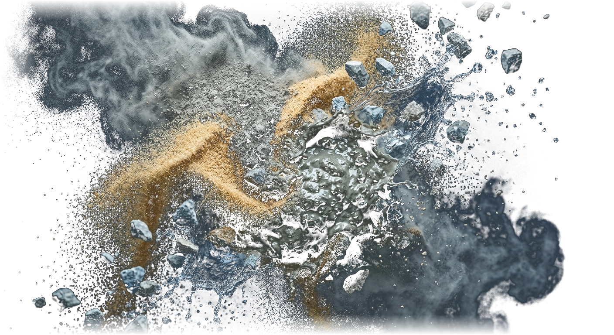

Le béton est un matériau composite obtenu par le mélange de ciment, de sable, de granulats, d'eau et, optionnellement, d'adjuvants. Au contact de l'eau, le ciment s'hydrate et fige l'ensemble en une véritable pierre artificielle dont on pilote les performances au gramme près. C'est aujourd'hui, et de loin, le matériau de construction le plus utilisé au monde.
Sa force, c'est la compression. Un béton structurel courant encaisse de 25 à 60 MPa — soit les classes de résistance C25/30 à C50/60 — tandis que les bétons à hautes performances (BHP) et les bétons fibrés à ultra-hautes performances (BFUP) franchissent allègrement la barre des 100 MPa. Pour donner une idée concrète : un simple bloc de béton C50/60 d'à peine 34 cm de côté — une surface plus petite qu'une feuille A3 — suffirait, en compression pure, à supporter les 575 tonnes d'un Airbus A380, le plus gros avion de ligne du monde, à pleine charge au décollage. Ajoutez à cela une excellente tenue au feu, une forte inertie thermique, une durabilité qui se compte en décennies et une liberté de formes quasi totale : le béton se coule là où l'acier et le bois s'arrêtent.
Sa faiblesse est l'autre face de sa force : il résiste mal à la traction. On le marie donc à l'acier — c'est le béton armé — ou on le met sous tension — le béton précontraint — pour reprendre les efforts qu'il ne peut encaisser seul. Restent deux défis que nous prenons au sérieux : son empreinte carbone, dominée par le clinker du ciment, et les phénomènes de retrait, fluage et carbonatation, qu'une conception rigoureuse (rapport E/C maîtrisé, classe d'exposition XC/XD/XS adaptée, enrobage suffisant) permet de contenir.
L'avenir du béton s'écrit bas carbone. Substitution du clinker par laitiers, cendres et métakaolins (ciments CEM II à CEM VI), granulats recyclés, bétons de réemploi, géopolymères et minéralisation du CO₂ : la filière se réinvente pour diviser son empreinte par deux à trois d'ici 2050, portée par la RE2020. Loin d'être un matériau du passé, le béton de demain sera plus sobre, plus durable et plus intelligent — et c'est précisément là que se joue notre métier.